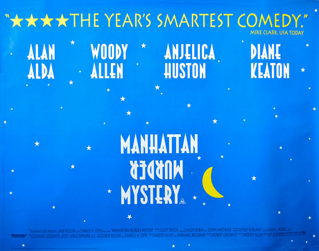
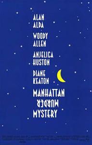
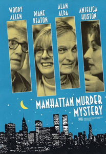
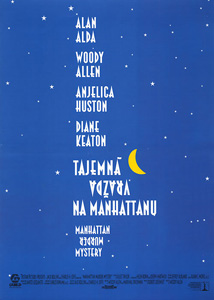
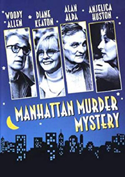
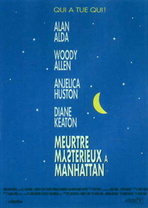
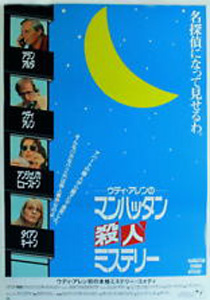

|
||||
Manhattan Murder Mystery (1993) |
||||
 |
||||
Director |
- |
Woody Allen | ||
Producers |
- |
Robert Greenhut Jack Rollins Charles H. Joffe |
||
Screenplay |
- |
Woody Allen Marshall Brickman |
||
Cinematography |
- |
Carlo Di Palma | ||
Production Designer |
- |
Santo Loquasto | ||
Costume Designer |
- |
Jeffrey Kurland | ||
Editor |
- |
Susan E. Morse | ||
Cast |
||||
Carol Lipton |
- |
Diane Keaton | ||
Larry Lipton |
- |
Woody Allen | ||
Ted |
- |
Alan Alda | ||
Marcia Fox |
- |
Anjelica Huston | ||
Paul House |
- |
Jerry Adler | ||
Lillian House |
- |
Lynn Cohen | ||
Helen Moss |
- |
Melanie Norris | ||
Mrs. Dalton |
- |
Marge Redmond | ||
Marilyn |
- |
Joy Behar | ||
Sy |
- |
Ron Rifkin | ||
Nick Lipton |
- |
Zach Braff | ||
Neighbour |
- |
Sylvia Kauders | ||
Plot |
||||
Middle aged New Yorkers Larry and Carol Lipton's marriage is in an unspoken rut. That rut is highlighted when they formally meet for the first time Paul and Lillian House, long time neighbours approaching their senior years who live on the same floor as them in their upscale Manhattan apartment building. The day after that meeting which included coffee in the Houses' apartment, Larry and Carol learn that Lillian died of coronary heart failure. Spurred on by having just watched Double Indemnity (1944), Carol, based largely on circumstantial evidence, believes that Paul may have murdered Lillian, as he is not bereft enough about her passing, especially as she had not mentioned any health problems in their detailed discussion during coffee the previous evening. Larry, a book editor, believes that Carol's imagination is working overtime, especially as she is currently unemployed, but whose most recent employment thought is to open a restaurant. Carol turns to their recently divorced friend Ted, a writer and a possible partner in the restaurant venture, to be Watson to her Sherlock Holmes in finding out conclusive evidence to her belief, no matter what it takes. Ted, who generally does have more of an adventurous spirit than Larry to match Carol in that respect, is a willing Watson. Larry believes Ted's willingness is because he is interested in Carol sexually. Larry, beyond wanting to set Ted up with Marcia Fox, one of his clients who seems to be interested in Larry himself, has to decide if he should get involved in Carol's investigative work if only to save their marriage. Things change when Carol discovers more and more evidence which points to Paul truly being a murderer, at which time the foursome of Carol, Ted, Larry and Marcia try to pull whatever references they can think of from books and movies to piece together the story and as such gather the necessary evidence, without really realizing that their lives may be in danger if Paul truly is a murderer and finds out they are after him. |
||||
Filming |
||||
Allen started Manhattan Murder Mystery as an early draft of Annie Hall, but he did not feel that it was substantial enough, and he decided to go in a different direction. He had put off making the film for years because he felt it was too lightweight, "like an airplane book read". Allen decided to revisit the material in the early 1990s. He contacted Marshall Brickman, who co-wrote Annie Hall, and they developed the story further. The role of Carol was originally written for Mia Farrow, but the part was recast when she and Allen ended their relationship and became embroiled in a custody battle over their three children. Allegations in the media claimed that changes were made to the film in what was "definitely a reaction" to Allen's relationship problems, including the casting of Anjelica Huston as "a much younger first time novelist" with whom Allen's character became romantically involved (Huston was 41 during production). In the fall of 1992, Allen called Diane Keaton and asked her to fill in for Farrow, and she immediately accepted. When asked if he had re-written the script to fit Keaton's talents, Allen said, "No, I couldn't do that. In a regular script I would have done that upon hiring Diane Keaton. But I couldn't [here] because it's a murder mystery, and it's very tightly plotted, so it's very hard to make big changes ... I had written more to what Mia likes to do. Mia likes to do funny things, but she's not as broad a comedian as Diane is. So Diane made this part funnier than I wrote it." Making the film was a form of escape for Allen because the "past year was so exhausting that I wanted to just indulge myself in something I could relax and enjoy". He also found it very therapeutic working with Keaton again. After getting over her initial panic in her first scene with Alan Alda, Keaton and Allen slipped back into their old rhythm. According to Allen, Keaton changed the dynamic of the film because he "always look(s) sober and normal compared to Keaton. I turn into the straight man". Huston said that the set was "oddly free of anxiety, introspection and pain" and this was due to Keaton's presence. Allen had cinematographer Carlo Di Palma rely on hand-held cameras, "swiveling restlessly from one room to another, or zooming in abruptly for a close look." Allen staged the climactic shoot-out in a roomful of mirrors that, according to Allen, referenced a similar shoot-out in Orson Welles' film The Lady from Shanghai. The film marked Allen's second and final film with TriStar Pictures, and it was speculated in the press that this deal was not extended because of the filmmaker's personal problems, or that his films were not very profitable. Allen, however, denied these allegations in interviews at the time. Zach Braff, who was 17 years old at the time, appeared in one scene as Nick Lipton, the son of Larry and Carol. Years later, he said: "When I look at that scene now, all I can see is the terror in my eyes." |
||||
Filming Locations |
||||
The film was shot in the fall of 1992 on the streets of Greenwich Village, the Upper East Side and the Upper West Side. Larry and Carol Lipton's apartment is at 200 East 78th Street, between 2nd and 3rd Avenue and between two groups of New York City Designated Landmarks, east of one group of rowhouses and west of another group. |
||||
Quotes |
||||
"I can't listen to that much Wagner, ya know? I start to get the urge to conquer Poland." |
||||
Music |
||||
I Happen to Like New York (Cole Porter) |
- |
Bobby Short |
||
The Best Things in Life Are Free (Ray Henderson) |
- |
Erroll Garner | ||
The Hallway (Miklós Rózsa) |
- |
From the film Double Indemnity | ||
Wagner - Der fliegende Holländer |
- |
Orchester der Staatsoper München / Clemens Krauss (Hans Hotter) |
||
Take Five (Paul Desmond) |
- |
The Dave Brubeck Quartet | ||
I'm In the Mood for Love (Jimmy McHugh) |
- |
Erroll Garner | ||
The Big Noise From Winnetka (Ray Bauduc) |
- |
Bob Crosby, His Orchestra and the Bobcats | ||
Out of Nowhere (Johnny Green) |
- |
Coleman Hawkins and His All-Star Jam Band |
||
Have You Met Miss Jones (Rodgers / Hart) |
- |
Art Tatum-Ben Webster Quartet |
||
Guy and Dolls Overture (Frank Loesser) |
- |
New Broadway Cast (1992) | ||
Sing, Sing, Sing (Louis Prima) |
- |
Benny Goodman & His Orchestra | ||
Misty (Erroll Garner) |
- |
Erroll Garner
|
||
Reviews |
||||
"That Woody Allen found time to be remotely funny - in the midst of his highly publicized legal troubles - surely merits some kind of professional award." - Desson Thomson : Washington Post "Although Manhattan Murder Mystery struggles with its own contrivances, it achieves a gentle, nostalgic grace and a hint of un-self-conscious wisdom." - Janet Maslin : New York Times |
||||
Additional Artwork |
||||
   |
||||
   |
||||